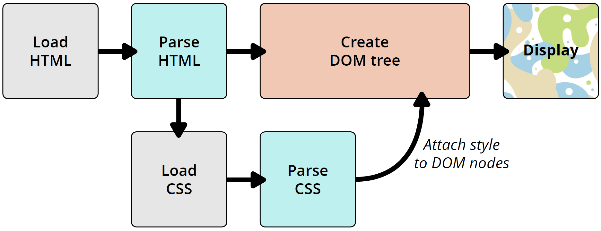
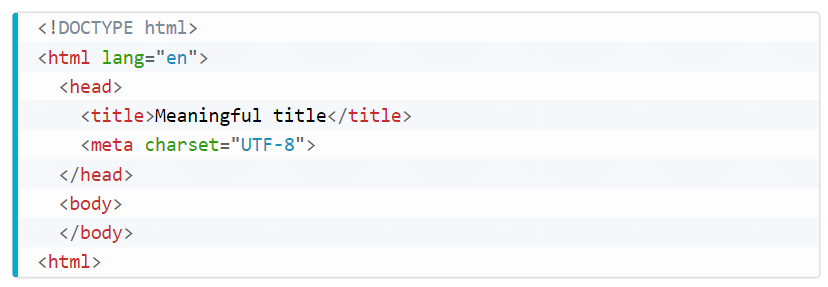
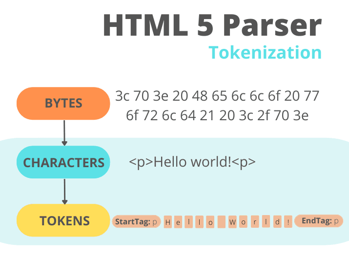
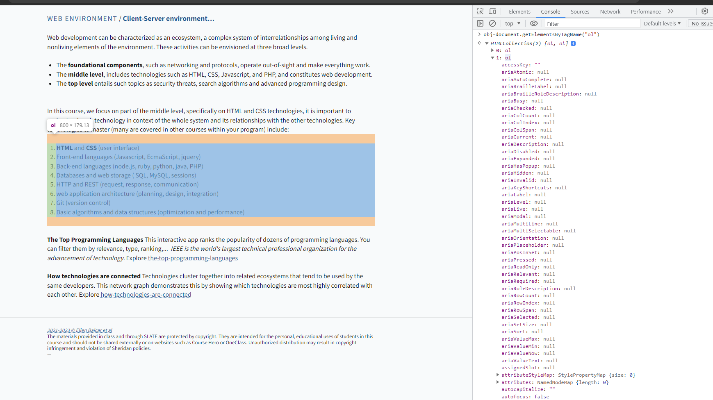

After the browser has received the HTML file, it parses it to generate the DOM (Document Object Model) tree.
This is done by the browser engine which is the core of the browser (Eg: Gecko for Firefox, Webkit for Safari, Blink for Chrome, etc).

NOTE: If the page requires any external resources it will be handled as follows:
Non-blocking resources are fetched in parallel. Eg: Images.
Deferring resources are fetched in parallel but are executed after the DOM tree is constructed. Eg: script WITH defer attribute & CSS files.
Blocking resources are fetched and executed sequentially. Eg: script WITHOUT defer attribute.
Example of HTML file code (Minimal HTML5 Document)

1. Tokenization
The first step for displaying the web page is to tokenize the HTML file. Tokenization is the process of breaking up a string of characters into meaningful chunks for the browser, called tokens.
Tokens are the basic building blocks of the DOM tree.

2. DOM Tree construction
Lexing is the process of converting a sequence of tokens into a tree structure called the DOM tree.
The DOM tree is a tree data structure that represents the nodes in the HTML document.
You can access the properties for each element in DOM using the Developer's tools. Example
3. Parsing CSS
After the DOM tree is constructed, the browser parses the CSS file to generate the CSSOM (CSS Object Model). This process is similar to the DOM tree construction using tokenization & generation of the CSSOM